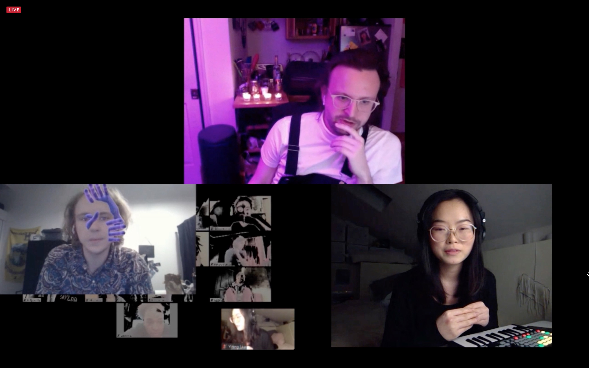
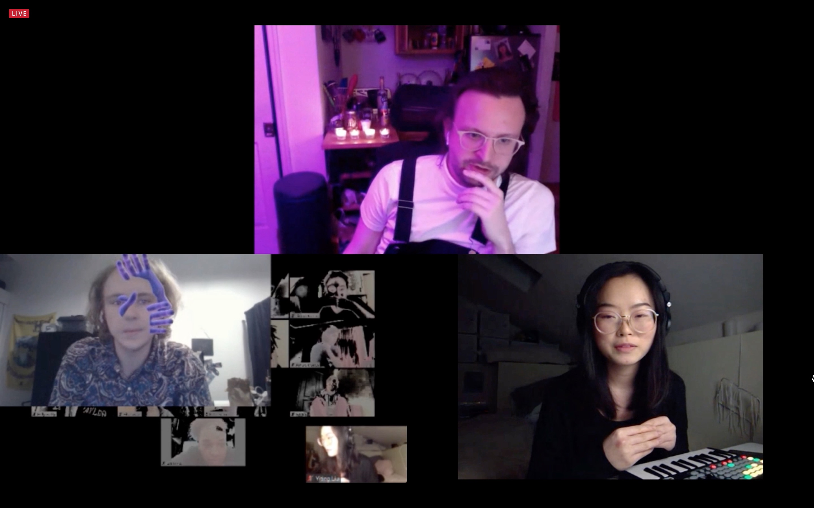
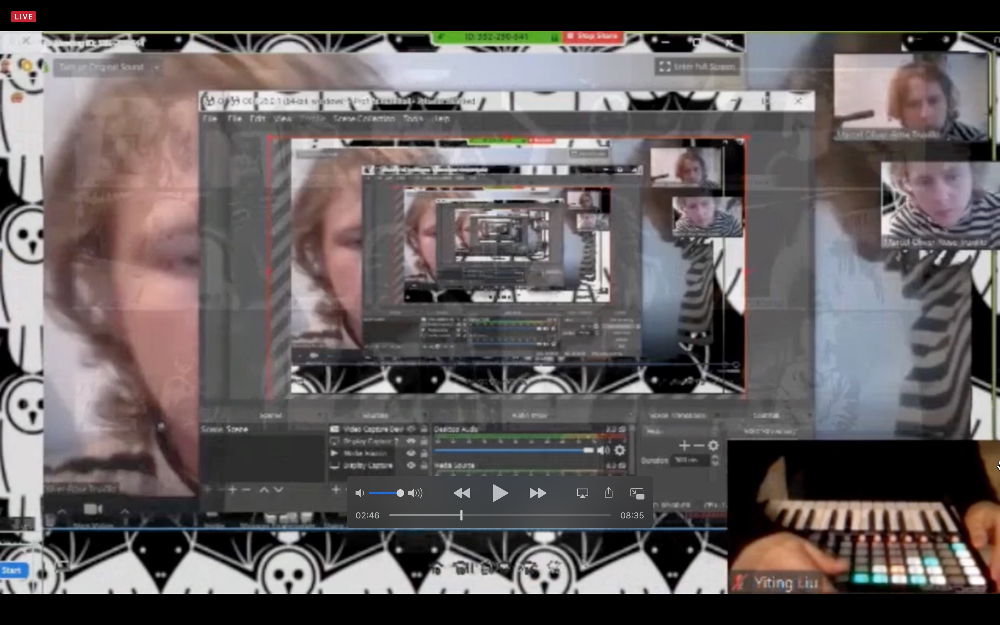

A Day, Any Day, Everyday - Live Performance
A live audiovisual performance interpreting the daily mundane activities during COVID-19 to represent the situation where days are no longer days and nights are no longer nights. .
Highlights
This project was created during PerformaJam, sponsored by ITP-NYU Adjacent Journal and CultureHubNYC.Edwin Oliver-Rose and I translated our feelings during COVID-19 into audiovisual performance under 6 hours. We used personal footage of us doing mundane activities and screen recordings as visuals and sourced daily sounds as audio.
Skill: Ableton Live, Recording, Remixing, Audition, Live Performance
Time: Made within 6 hours on Apr. 25, 2020.
Role
I created the sound piece while Oliver-Rose made the visuals.
 

Interview after the live performance. Left: Edwin Oliver-Rose. Center: Alden Jones. Right: Yiting Liu.
Problem Statement
How might we translate our feelings of the void into an audiovisual live performance?
Here are some stills from our live performance.

Concept
During the PerformaJam, we were given the concept of “Energy Vampire”, which creates the sense of energy draining during COVID-19. We brainstormed and researched on social media platforms and discovered that most people think everyday feels the same. In order to highlight that as our concept, we included elements that loop the visuals and music to create a sense that days are no longer days and nights are no longer nights.
Solution
Live Performance here from 1:00:00 to 1:09:00.
You can listen to the sound piece here. This is different from the live performance piece with some adjustments.
Special thanks to Edwin Oliver-Rose.